Basic mesh elements
This tutorial describes how to create simple meshes using the toolbox NIHU.
Contents
Create a line
Simple line meshes can be created using the toolbox function create_line. There are different ways of meshing lines:
- Defining its length 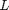 and the number of elements 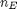
- Defining its starting and ending positions 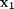 and 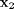, as well as the number of elements
- Defining the internal nodes 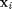 of the line.
In the first example, the first method is applied.
L = 5; % length of the line Le = 0.3; % approximate length of a line element N = ceil(L/Le); % number of elements lin1 = create_line(L, N);
The second method can be applied as follows:
R = [ % start and end locations 1 0 0 2 3 1 ]; Le = 0.3; % approx. length of a line element N = ceil(norm(diff(R,[],1))/Le); % number of elements lin2 = create_line(R, N);
If the first row of R is omitted, then the line starts at the origin:
R = [2 3 1]; lin3 = create_line(R, N);
In the third method, the line's nodes are directly defined. In this case, the line is aligned along the 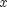 axis.
Cx = (-1:.1:+2)'; % internal nodes
lin4 = create_line(Cx);
the nodes can be defined as three-dimensional coordinates. In this case Cx is an nx3 (or nx2) matrix:
l = (0:1e-2:1)';
Cx = [ l l.^2 l.^3 ]; % internal nodes
lin5 = create_line(Cx);
figure;
subplot(2,3,1); plot_mesh(lin1);
subplot(2,3,2); plot_mesh(lin2);
subplot(2,3,3); plot_mesh(lin3);
subplot(2,3,4); plot_mesh(lin4);
subplot(2,3,5); plot_mesh(lin5);
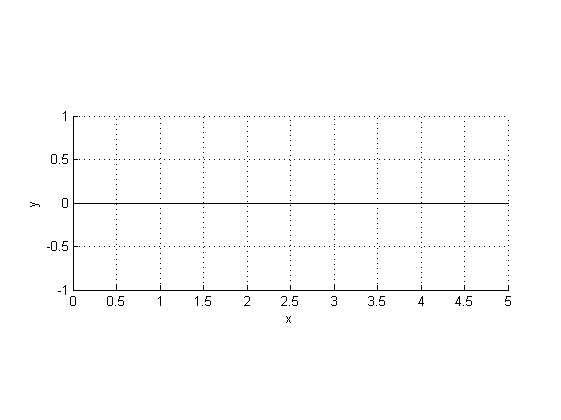 Create slab
Slabs can be created using the toolbox function create_slab. There are three ways of defining slabs:
- Define its side lengths 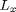 and 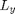, and the number of elements 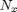 and 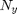
- Define its corner nodes ,
 and the number of elements along the two dimensions.
and the number of elements along the two dimensions. - Define the internal nodes 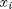, 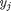 directly, so that the slab's nodes are elements of the Descartes product 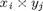.
In the first case, the slab is located at the origin, its sides are aligned along the and 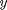 axes.
L = [4 3]; % side lengths Le = .3; % approximate side length of an element N = ceil(L/Le); % number of elements along the two sides slab1 = create_slab(L, N);
The parameters L and N can be defined as scalars, so that the same meshing parameters are used in the two directions.
slab2 = create_slab(4, 7);
If L is defined with two rows, then the slab is located between the coordinates defined by the rows of L
slab3 = create_slab([1 2; 3 4], [10 20]);
In the second method, the four corner nodes are defined in the 4x3 matrix C.
C = [ % corner coordinates
0 0 0
1 0 0
.7 1 1
.2 .7 0
];
slab4 = create_slab(C, [10 7]);
With the third method, non-uniformly meshed slabs can be easily defined as follows:
Cx = logspace(1, 2, 30).'; % internal nodes along the x axis Cy = linspace(10, 30, 10).'; % internal nodes along the y axis slab5 = create_slab(Cx, Cy);
If only Cx is defined, the same nodes are applied for both dimensions:
slab6 = create_slab(Cx); figure; subplot(2,3,1); plot_mesh(slab1); subplot(2,3,2); plot_mesh(slab2); subplot(2,3,3); plot_mesh(slab3); subplot(2,3,4); plot_mesh(slab4); subplot(2,3,5); plot_mesh(slab5); subplot(2,3,6); plot_mesh(slab6);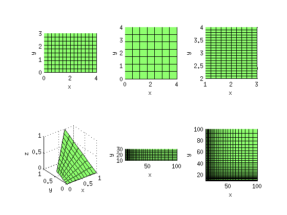
Create brick volume and brick surface
Bricks volume meshes can be created using the toolbox function create_brick. There are three ways of defining brick volumes:
- Define its side lengths 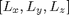 and division paramters 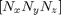
- Define its corner nodes , 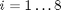,
- Define its internal nodes , , 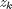 along the three dimensions
The first method is demonstrated first, where the brick is located in the origin, with sides parallel to the coordinate axes:
L = [5 4 3]; % Brick dimensions [Lx Ly Lz] Le = .3; % element length N = ceil(L / Le); % Division parameter [Nx Ny Nz] brick1 = create_brick(L, N);
The second method makes it possible to define skewed bricks, by defining the corner nodes
C = [ % 8 corner nodes of the brick
0 0 0
1 0 0
1.5 1 0
-.1 .9 .1
0 0 1
1 0 1.2
1.5 1 1
-.1 .7 1
];
brick2 = create_brick(C, [10, 10, 10]);
With the third method, non-uniform sampling can easily be defined:
Cx = (.1:.05:1).^2; % nodes along the x axis Cy = (.1:.05:1).^3; % nodes along the y axis Cz = (.1:.05:1).^4; % nodes along the z axis brick3 = create_brick(Cx, Cy, Cz);
Brick boundaries can be meshed using the toolbox function create_brick_boundary, by defining the brick dimensions and division parameters.
N = ceil(L / Le); % Division parameter [Nx Ny Nz]
brickb = create_brick_boundary(L, N);
figure;
subplot(1,3,1); plot_mesh(brick1);
subplot(1,3,2); plot_mesh(brick2);
subplot(1,3,3); plot_mesh(brick3);
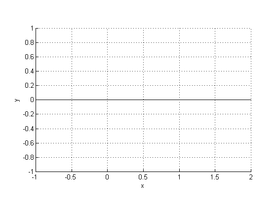 Create circles and spheres
Circle quadrants can be meshed by using the function create_circle_quadrant. The necessary parameters are the circle's radius 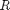 and a division parameter 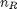. The division parameter defines the number of elements along the radius of the circle quadrant, the same as the number of elements along the perimeter. The circle quadrant is located in the 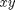 plane, the center is at the origin, and the sides are aligned along the and axes.
R = 2; % radius nR = 10; % division parameter circlequad = create_circle_quadrant(R, nR);
Circles can be meshed by using the function create_circle. The necessary parameters are the circle's radius and a division parameter . The circle is located in the plane, the center being at the origin. The number of elements along the perimeter is 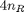.
circle = create_circle(R, nR);
Create sphere and sphere surface
Spherical volumes can be created using the toolbox function create_sphere, by defining the sphere radius and a division parameter . The division parameter defines the number of elements along the sphere radius. The number of elements along the perimeter is .
sphere = create_sphere(R, nR);
Sphere boundaries can be created using the toolbox function create_sphere_boundary, by defining the sphere radius and division parameter .
sphereb = create_sphere_boundary(R, nR);
Create Cat's eye
Cat's eye surface models can be created using the function create_catseye, by defining the radius and division parameter .
cat = create_catseye(R, nR); figure; subplot(2,2,1); plot_mesh(circlequad); subplot(2,2,2); plot_mesh(circle); subplot(2,2,3); plot_mesh(sphere); subplot(2,2,4); plot_mesh(cat); view([110 35]);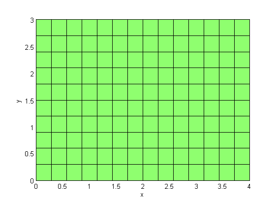